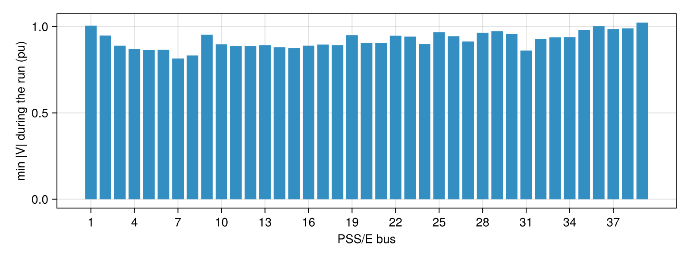
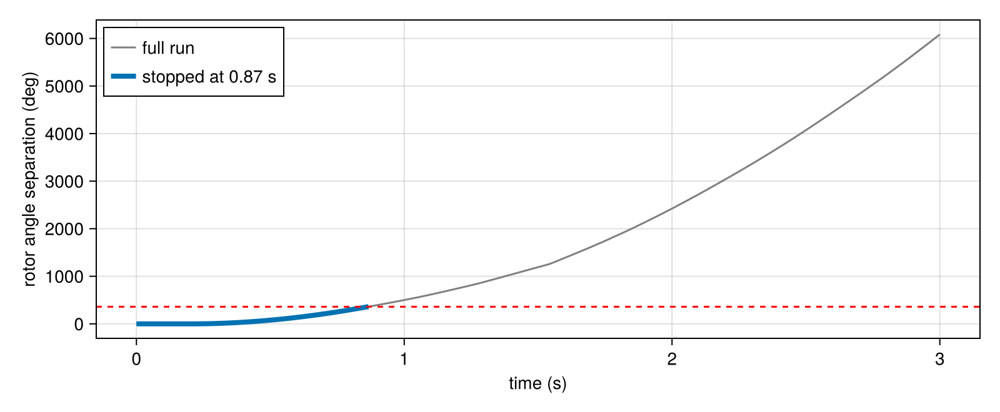

Recording and early stop
By default integrate! returns the full trajectory: every state at every step, in Float64. For large systems that is a lot of memory. ACTIVSg70k has 216,698 unknowns, so 10 s at 1/120 s is about 2 GB per simulation. The recording options store only what you need. They never change the computed solution.
| option | effect |
|---|---|
save_every = s | store steps 1, 1+s, 1+2s, … (the initial state is always stored) |
save_idxs = rows | store only these rows of the state |
save_eltype = Float32 | store in single precision |
step_callback = (k, t, z) -> … | called with the full state after every step, stored or not |
stop_condition = (k, t, z) -> Bool | end the simulation when it returns true |
using GradPower, CairoMakie
ex = joinpath(pkgdir(GradPower), "examples")
sys = from_psse(joinpath(ex, "IEEE39.raw"), joinpath(ex, "IEEE39_gov.dyr"))
build_network!(sys); runpf!(sys)
dp = DynamicProblem(sys); initialize_dynamics!(dp, sys)
z0 = copy(dp.zvec)
add_event!(sys, ContingencyEvent(sys.busmap[16], 0.05, 0.2, 0.3))Named results
The default return remains (times, trajectory). Opt into a SimulationResult with result=true on the CPU or GPU integrators:
res = integrate!(dp, sys, 5.0; result=true)
w = speed(res, 1) # pu speed deviation, view
w = state(res, :genrou, 1, :w) # same raw state
vm = bus_voltage(res, 16; component=:magnitude) # external bus 16, pu
vr = bus_voltage(res, 16; component=:real) # raw state viewUse state(res, :genrou, bus, "1", :w) for explicit external bus and device identity. The short k form sorts recorded devices by (external bus, device ID), independently of solver layout. Controller state names retain their declared case (for example :PF0 for IEESGO). speed returns deviation from synchronous speed, not absolute speed or frequency in Hz. Voltage angle is in radians.
res.channels describes every saved raw row, including device algebraic states and rectangular network voltages. state_channels(sys; save_idxs=rows) exposes the same schema without running a simulation. The schema snapshots initial online flags; applied scheduled events are in res.events, and limit events are in res.metadata.limit_events. Samples at event steps precede their algebraic re-solve. Missing states in selective recordings raise ArgumentError. Raw accessors return views; derived complex voltage, magnitude, and angle allocate.
res.status is [:success] or [:terminated] for early stop; failed Newton solves still throw. res.metadata.final_time gives the actual stop time even when a downsampled output does not include that step. res.times always matches the stored columns.
Batches keep one matrix per scenario in res.trajectories. Supply scenario_ids=[:base, :fault] and select with speed(res, 1; scenario=:fault). IDs default to 1:M. Result objects can still be unpacked as times, trajectories = res.
Store less
Keep only the bus voltages, every 6th step (20 samples per second), in Float32:
net = sys.dynamic.diff_dim + sys.dynamic.alg_dim
rows = collect(net + 1 : net + 2length(sys.buses))
dp.zvec .= z0; t_full, full = integrate!(dp, sys, 5.0)
dp.zvec .= z0; t, V = integrate!(dp, sys, 5.0; save_idxs = rows, save_every = 6,
save_eltype = Float32)
(full = Base.summarysize(full), reduced = Base.summarysize(V),
same_values = V == Float32.(full[rows, 1:6:end]))(full = 1144352, reduced = 31560, same_values = true)The reduced output is exactly a slice of the full one.
Compute statistics on the fly
step_callback sees every step at full resolution. It is the place to accumulate quantities without storing the trajectory: peaks, energies, the labels of a dataset. Here, the lowest voltage seen at each bus:
vmin = fill(Inf, length(sys.buses))
cb = (k, t, z) -> begin
for b in eachindex(vmin)
vmin[b] = min(vmin[b], hypot(z[net + 2b - 1], z[net + 2b]))
end
end
dp.zvec .= z0
integrate!(dp, sys, 5.0; save_idxs = Int[], step_callback = cb) # stores nothing
fig = Figure(size = (800, 300))
ax = Axis(fig[1, 1], xlabel = "PSS/E bus", ylabel = "min |V| during the run (pu)",
xticks = 1:3:39)
barplot!(ax, [b.i for b in sys.buses], vmin)
fig
Stop early
A fault cleared too late makes some machines lose synchronism: rotor angles separate without bound. There is no point simulating such a run to the end. stop_condition ends it as soon as the outcome is known. The output then holds the steps up to that point.
empty!(sys.dynamic.events)
add_event!(sys, ContingencyEvent(sys.busmap[16], 0.001, 0.2, 0.8)) # 600 ms bolted-like fault
delta = [i + 1 for i in GradPower.gen_speeds(sys)] # rotor angle rows
d0 = z0[delta]
separation(z) = (d = z[delta] .- d0; maximum(d) - minimum(d)) # relative to t = 0
dp.zvec .= z0; tf, full = integrate!(dp, sys, 3.0)
dp.zvec .= z0; ts, part = integrate!(dp, sys, 3.0;
stop_condition = (k, t, z) -> separation(z) > deg2rad(360))
fig = Figure(size = (800, 330))
ax = Axis(fig[1, 1], xlabel = "time (s)", ylabel = "rotor angle separation (deg)")
lines!(ax, tf, rad2deg.(separation.(eachcol(full))), color = :gray, label = "full run")
lines!(ax, ts, rad2deg.(separation.(eachcol(part))), linewidth = 4,
label = "stopped at $(round(ts[end], digits = 2)) s")
hlines!(ax, [360], color = :red, linestyle = :dash)
axislegend(ax, position = :lt)
empty!(sys.dynamic.events)
fig
The separation is measured relative to the initial angles. Large systems can already span close to 200° at equilibrium, so the absolute spread is not a reliable instability test.
Batches
integrate_batched! takes the same save_* options, applied to every scenario. Its callback is step_callback(m, k, t, z), with the scenario index m first.